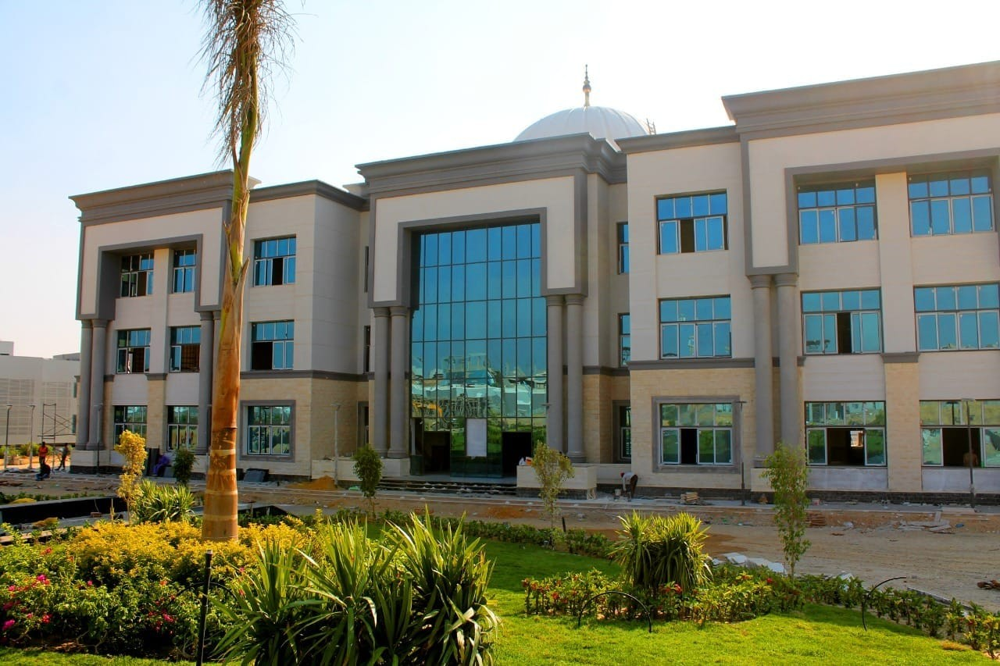
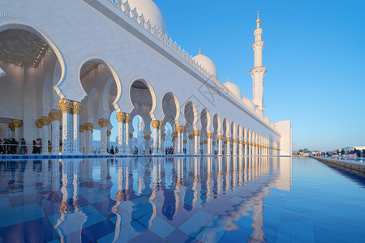
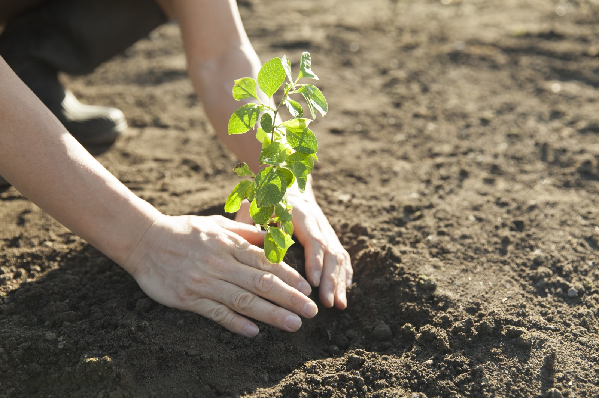

مرحبا بكم في فريقنا التطوعي
نحن هنا لنصنع فرقًا حقيقيًا في المجتمع من خلال العمل التطوعي وروح التعاون.
انضم إلينا الآنمن نحن
فريقنا مكرس لتحسين المجتمع من خلال مشاريع تطوعية متنوعة. نؤمن بأهمية العمل الجماعي ونطمح لتحقيق تأثير إيجابي دائم.
100+
مشروع مكتمل
500+
متطوع
2000+
ساعة تطوعية
مشاريع مميزة

إعادة ترميم جامعة باشاك شهير
حيث قام فريقنا بإعادة ترميم الجامعة في عام 2020

بناء مسجد عمر بن الخطاب
تم بناء مسجد عمر بن الخطاب من قبل فريق أثر التطوعي في عام 2018 في مدينة دمشق

تشجير الطرق الرئيسية
بسبب الرعي الجائر و القطع المستر قرر فريقنا تشجير الطريق العامة والرئيسية ليعطي منظراً حضارياً